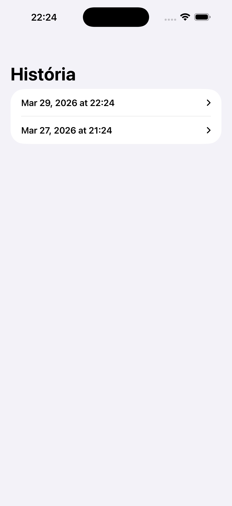

01
Vyhľadávanie produktov naprieč obchodmi
Hľadajte produkty a porovnávajte relevantné ponuky medzi obchodmi bez preskakovania medzi aplikáciami či letákmi.
Košíq pomáha porovnávať ceny potravín naprieč obchodmi, vytvárať prehľadné nákupné zoznamy a vracať sa k predchádzajúcim zoznamom, keď je čas nakúpiť znova. Je rýchly, sústredený a navrhnutý pre rytmus bežných nákupov v supermarkete.
Všetko dôležité pre váš ďalší nákup na jednom mieste.
Košíq spája prehľadnosť, rýchlosť a praktickosť do jedného jednoduchého nákupného toku, v ktorom sa nestratíte ani počas bežného týždňového nákupu.
Hľadajte produkty a porovnávajte relevantné ponuky medzi obchodmi bez preskakovania medzi aplikáciami či letákmi.
Pridávajte ocenené produkty alebo vlastné položky, organizujte si zoznam a udržte nákupný proces ľahký.
Archivujte dokončené zoznamy a vracajte sa k predchádzajúcim nákupom pri plánovaní ďalšej cesty do obchodu.
Košíq funguje najlepšie vtedy, keď je celý proces jasný. Tieto tri kroky priamo zodpovedajú tomu, ako je aplikácia dnes postavená.
Začnite názvom produktu alebo kategóriou a prechádzajte aktuálne dostupné ponuky obchodov v jednom sústredenom toku.
Pridajte nájdené produkty alebo vlastné položky, upravte množstvá a pripravte si zoznam na ďalšiu návštevu obchodu.
Keď je nákup hotový, archivujte zoznam a zachovajte si ľahkú históriu, ku ktorej sa môžete neskôr vrátiť.
Namiesto snahy byť obrovským nákupným ekosystémom sa Košíq sústreďuje na jeden užitočný cyklus: objaviť produkty, vytvoriť praktický zoznam a zachovať kontinuitu cez históriu zoznamov.
Celý zážitok je navrhnutý tak, aby používateľov dostal do aplikácie rýchlo namiesto zbytočného úvodného nastavovania.
Vyhľadávanie produktov môže zobrazovať čas poslednej aktualizácie, aby mali používatelia kontext k dátam, ktoré vidia.
Pomoc aj dôležité informácie sú vždy poruke, takže sa k nim dostanete bez zbytočného hľadania.
To, čo vidíte na stránke, zodpovedá tomu, čo vás čaká aj priamo v aplikácii.
Každá obrazovka ukazuje, ako jednoducho sa dá prejsť od vyhľadávania až po hotový nákupný zoznam.



Jasné odpovede a priame možnosti kontaktu znižujú trenie pred aj po inštalácii.
Košíq vám pomáha porovnávať potraviny, vytvárať nákupné zoznamy a uchovávať históriu dokončených zoznamov priamo na iPhone.
Aplikácia je navrhnutá tak, aby onboarding ostal ľahký. Podľa nastavenia vydania môžete byť pre funkčnosť aplikácie automaticky prihlásený na pozadí.
Áno. Ak sa produkt nenájde, môžete z vyhľadávania pridať vlastnú položku a pokračovať v tvorbe zoznamu bez prerušenia.
Produktové dáta môžu v aplikácii zobrazovať čas poslednej aktualizácie. Skutočná frekvencia obnovy závisí od dátového zdroja použitého v aktuálnom vydaní.
Použite odkaz na podporu nižšie a priložte model zariadenia, verziu iOS a krátky popis problému, aby tím vedel pomôcť rýchlejšie.
Vaše súkromie berieme vážne a informácie o spracovaní údajov chceme držať jasné, konkrétne a zrozumiteľné.
Košíq je mobilná aplikácia určená na vyhľadávanie produktov, porovnávanie cien a správu nákupných zoznamov. Prevádzkovateľ aplikácie je dostupný cez odkaz na podporu.
Aplikácia môže spracúvať údaje, ktoré sú potrebné na jej fungovanie, najmä:
Údaje sa používajú výhradne na poskytovanie funkcií aplikácie, najmä na ukladanie zoznamov, zobrazovanie histórie, načítanie ponuky produktov a zabezpečenie spoľahlivého fungovania aplikácie. Košíq nepredáva osobné údaje používateľov tretím stranám.
Nákupné zoznamy, história nákupov a informácia o poslednej aktualizácii produktov sa ukladajú lokálne v zariadení používateľa. Tieto údaje zostávajú viazané na zariadenie, pokiaľ ich používateľ neodstráni alebo nevymaže aplikáciu.
Košíq používa služby Firebase Authentication a Cloud Firestore na anonymné prihlásenie a načítanie produktových dát. To znamená, že pri používaní aplikácie môže dochádzať k prenosu technických údajov potrebných na overenie relácie, komunikáciu so serverom a doručenie obsahu. Spracovanie týchto údajov sa zároveň riadi aj zásadami ochrany súkromia príslušných poskytovateľov služieb.
Údaje sa spracúvajú v rozsahu nevyhnutnom na poskytovanie funkcionality aplikácie a na jej bezpečnú prevádzku. Ak nás kontaktujete cez e-mail alebo odkaz na podporu, poskytnuté kontaktné údaje sa použijú len na vybavenie vašej otázky alebo požiadavky.
Lokálne uložené údaje zostávajú v aplikácii dovtedy, kým ich neodstránite vy alebo kým neodstránite aplikáciu zo zariadenia. Údaje odoslané cez podporu sa uchovávajú len počas času potrebného na vybavenie komunikácie a prípadných súvisiacich povinností.
V závislosti od rozsahu spracúvania môžete mať právo požiadať o prístup k údajom, ich opravu, vymazanie, obmedzenie spracúvania alebo podať námietku. Ak sa domnievate, že s údajmi nie je nakladané v súlade s právnymi predpismi, môžete sa obrátiť aj na príslušný dozorný orgán.
Tieto zásady ochrany súkromia môžeme priebežne aktualizovať, ak sa zmenia funkcie aplikácie alebo spôsob spracúvania údajov. Na tejto stránke bude vždy dostupná aktuálna verzia s dátumom poslednej aktualizácie.
Ak máte otázky k súkromiu alebo spracúvaniu údajov v aplikácii Košíq, kontaktujte nás cez odkaz na podporu.
Vyhľadajte produkty, vytvorte si zoznam a vracajte sa k tomu, čo nakupujete najčastejšie. Košíq robí z bežného nákupu rýchlejší a pokojnejší zvyk.